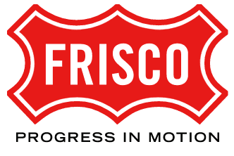
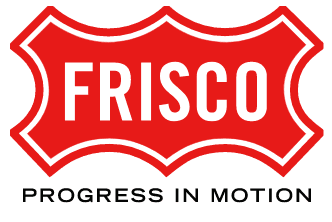

Sondra Hathaway
With over 20 years of experience in organizational development, Sondra leads organizations through change to successfully transform. Sondra holds degrees in business administration, psychology, and sociology. She is a certified a Manager of Quality and Organizational Excellence and Prosci Change Practitioner. Sondra has many specialty fields including strategic planning and employee engagement. She has produced several apps, designs computer-based training (CBT), and created TransformLocalGov's transformation quiz and change management software "ResultsMode."
Outcomes and Accountability
Capability Building
People Experience (PX)
Culture by Design
Strategy and Execution


 
